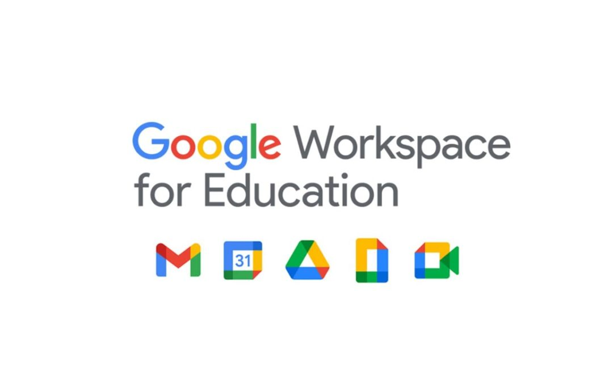

Google-ը առաջարկում է բազմաթիվ գործիքներ, որոնք արդյունավետորեն կարող են օգտագործվել կրթության գործընթացում՝ դասավանդման, սովորողների մասնակցության, նախագծերի կառավարման և թիմային աշխատանքի համար։ Ահա հիմնական գործիքները՝
Google Classroom
Դա հիմնական հարթակն է դասերի կազմակերպման և տնային հանձնարարությունների կառավարման համար։
Մանկավարժները կարող են ստեղծել դասեր, հանձնարարություններ ուղարկել, գնահատել աշխատանքները և հաղորդակցվել սովորողների հետ։
Սովորողները կարող են ներկայացնել իրենց աշխատանքները, մասնակցել քննարկումներին և ստանալ վերագրեր։
Google Docs
Համատեղ աշխատելու հարմար գործիք, որը թույլ է տալիս միաժամանակ խմբերով խմբագրել փաստաթղթեր։
Հարմար է խմբային նախագծերի, հաշվետվությունների և նշումների համար։
Google Slides
Ներկայացումների պատրաստման գործիք, որը թույլ է տալիս ստեղծել ինտերակտիվ սլայդշոուներ։
Սովորողները կարող են ներկայացնել իրենց նախագծերը և մանկավարժները կարող են մեկնաբանություններ թողնել անմիջապես սլայդների վրա։
Google Sheets
Տվյալների կազմակերպման և վերլուծության գործիք, որը հարմար է հաշվարկների, վիճակագրական վերլուծությունների և նախագծերի համար։
Կարող է օգտագործվել նաև գնահատման թերթիկների և դասերի պլանավորման համար։

Google Forms
Մանկավարժները կարող են ստեղծել հարցումներ, թեստեր և հետադարձ կապ ստանալ ուսանողներից։
Օգտակար է ուսուցման գնահատման, զեկույցների և ակադեմիական հետազոտությունների համար։
Google Meet
Տվյալների առցանց դասերի և հանդիպումների հարթակ։
Հարմար է հեռավար ուսուցման, քննարկումների և խորհրդակցությունների համար։
Google Drive
Մեկտեղ պահելու և կիսվելու բոլոր կրթական նյութերը։
Սովորողներն ու մանկավարժները կարող են պահպանել փաստաթղթեր, սլայդներ, աղյուսակներ և տեսանյութեր, և հեշտությամբ հասանելի դարձնել թիմին։
Google Keep
Նշումների, առաջադրանքների և հիշեցումների կառավարման գործիք։
Օգտակար է սովորողների համար՝ դասերը կազմակերպելու և հիշեցումներ ստանալու համար։